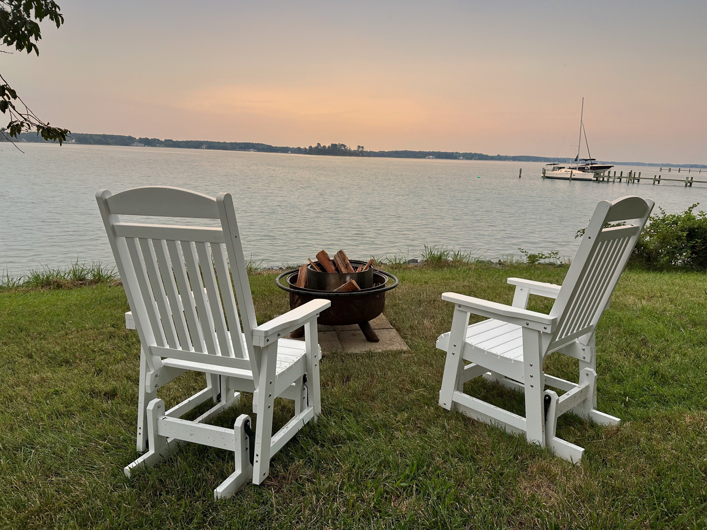
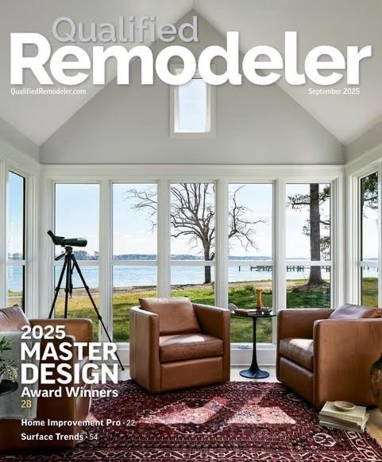
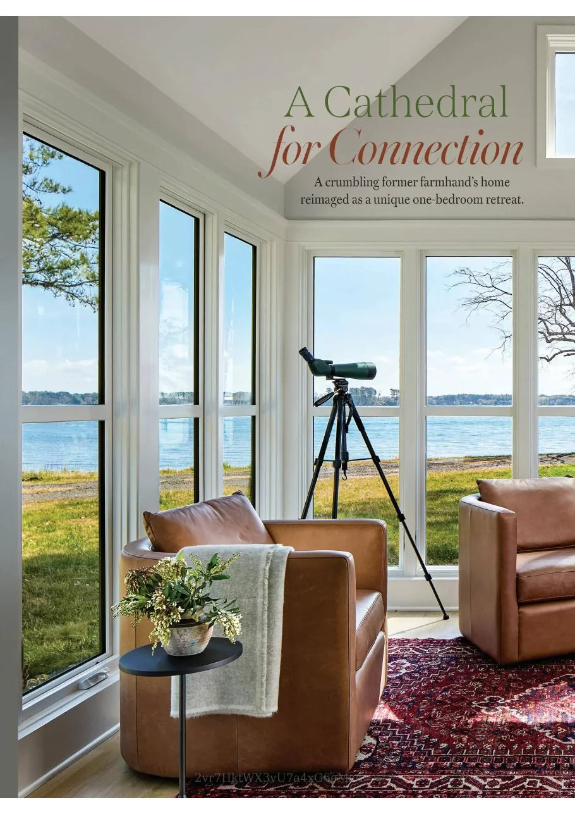
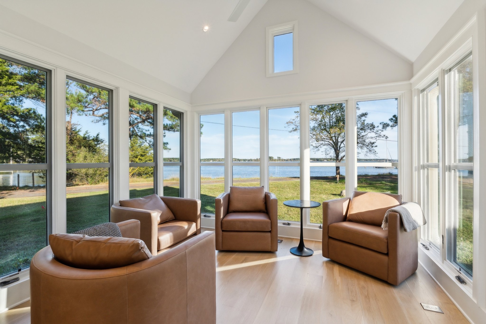
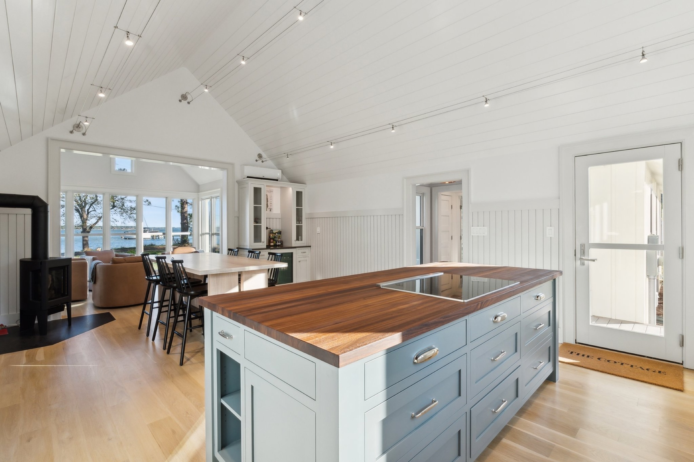
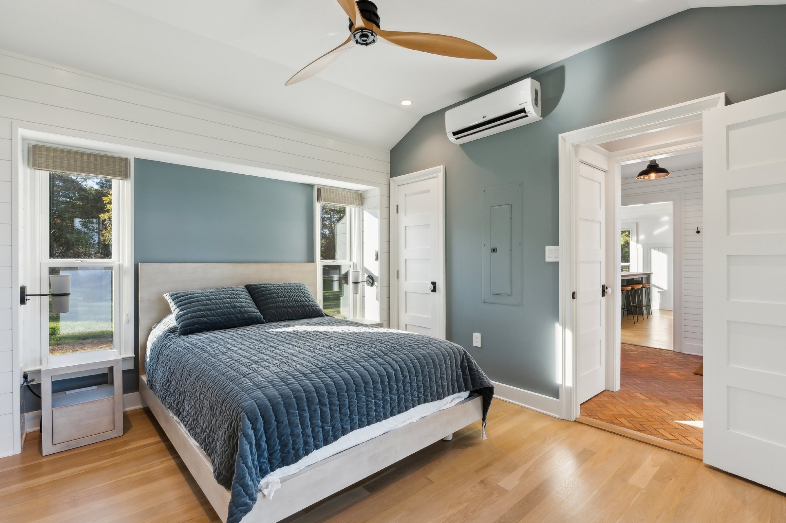
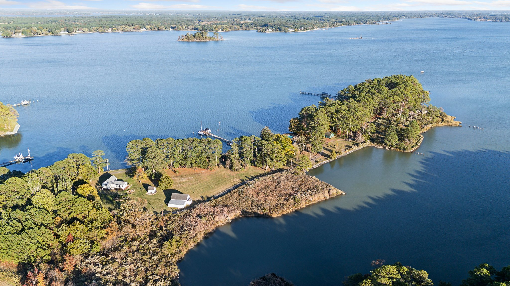
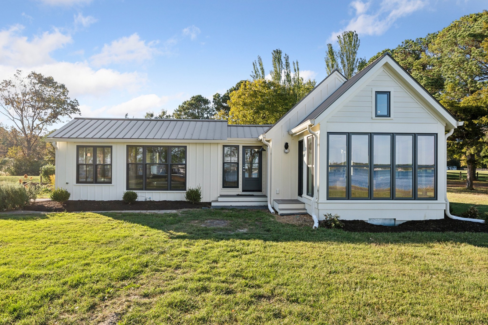
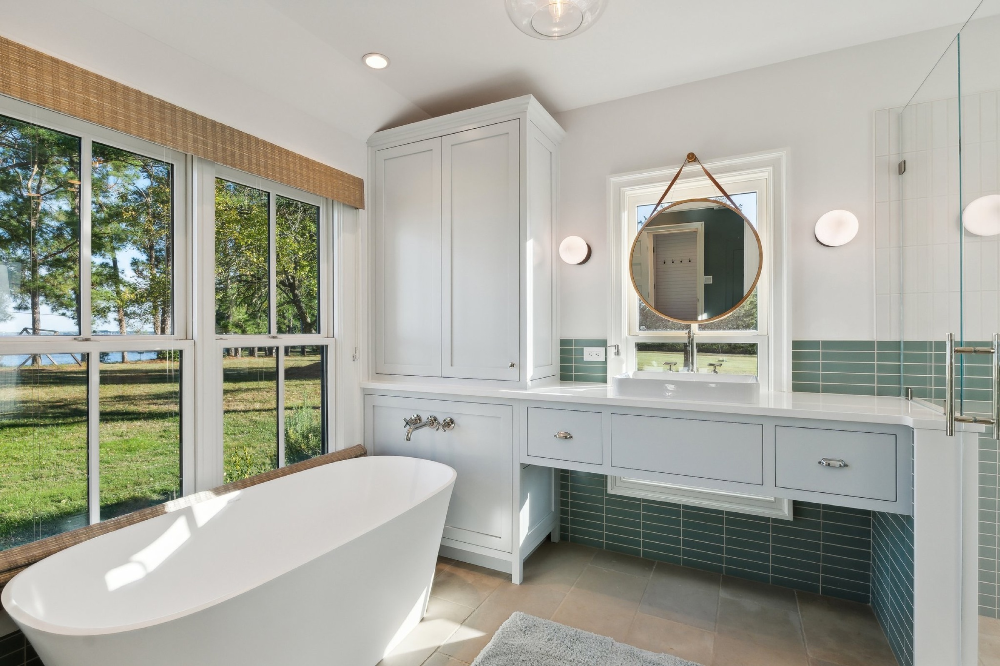

Bozman, Maryland · Near St. Michaels
Your private
waterfront escape.
A design-forward cottage on the Eastern Shore, made for slow mornings, fireside evenings, and time together.
Check availability →A stay with a sense of place
Serenity, considered down to the last detail.
On a quiet point of Maryland’s Eastern Shore, The Cottage at Broad Creek brings together the calm of the water and the comfort of a beautifully made home.
Wake to a wide-open view, paddle out from the property, then return to a generous kitchen, a fireside drink, and a sunset worth staying in for.

Featured on the cover
Qualified
Remodeler.
The Cottage at Broad Creek was selected as a 2025 Master Design Award winner and featured on the cover of the September 2025 issue.
September 2025 · 2025 Master Design Award winnersFeatured in Cottages & Bungalows
A cathedral
for connection.
Read the full feature on The Cottage at Broad Creek as a page-by-page magazine experience.

Inside & out
Room to exhale.





Made for two
Small luxuries,
beautifully done.
- 01 Water views from nearly every room
- 02 Fully equipped chef’s kitchen
- 03 Spa-like bath with soaking tub
- 04 Gas fireplace and high-speed Wi-Fi
- 05 Kayaks and paddleboards, May–October
Unhurried mornings
Leave the rush
at the water’s edge.
A private retreat where the itinerary is yours: a quiet cup of coffee, a walk along the shore, or a drive into St. Michaels for dinner.

Your Eastern Shore reset awaits
Find your
weekend away.
Choose your preferred booking platform to see availability and reserve your stay.